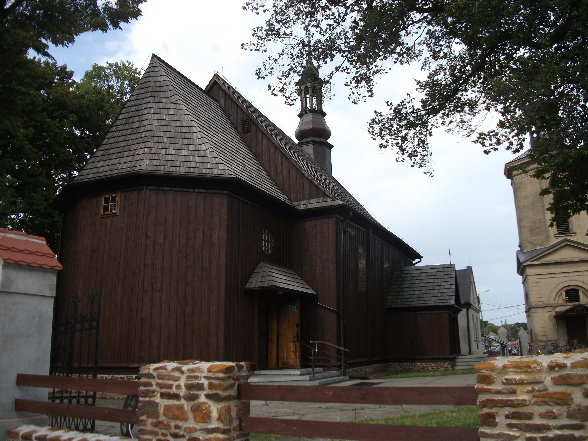

SKOMLIN
SKOMLINZabytkowy Kościół w Skomlinie
Obecny kościół św. Filipa i Jakuba w Skomlinie został zbudowany w 1740 r., dzięki staraniom właściciela wsi Władysława Bartochowskiego. Parafia w Skomlinie istniała już w 1459 r. i zaliczała się do najmniejszych w okolicach wielunia . Pierwszy drewniany kościół w Skomlinie wzmiankowany jest w 1520 r. Kościół ten spłonął w 1737 r. od uderzenia pioruna, na jego miejscu w 1746 r. wybudowano obecny. Staraniem księdza Bartłomieja Witkowskiego wyposażono świątynię w trzy barokowe ołtarze. W 1776 r. K. Więckowski przyozdobił ściany nowego kościoła iluzjonistyczną rokokową polichromią ze scenami z życia apostołów i świętych. Kościół konsekrowany dnia 21.XI.1781 r., przez biskupa Ignacego Kozierowskiego. Po 1849 roku do korpusu kościoła dostawiono murowaną zakrystię. Krótko przed 1939 r. kościół został odrestaurowany staraniem ówczesnego proboszcza księdza Zygmunta Jędrzyckiego. W czasie II wojny świątynia została ograbiona z paramentów, przed zburzeniem uchronił ją ówczesny wójt wsi pochodzenia niemieckiego.
Źródło: Narodowy Instytut Dziedzictwa